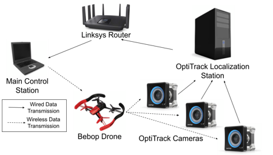
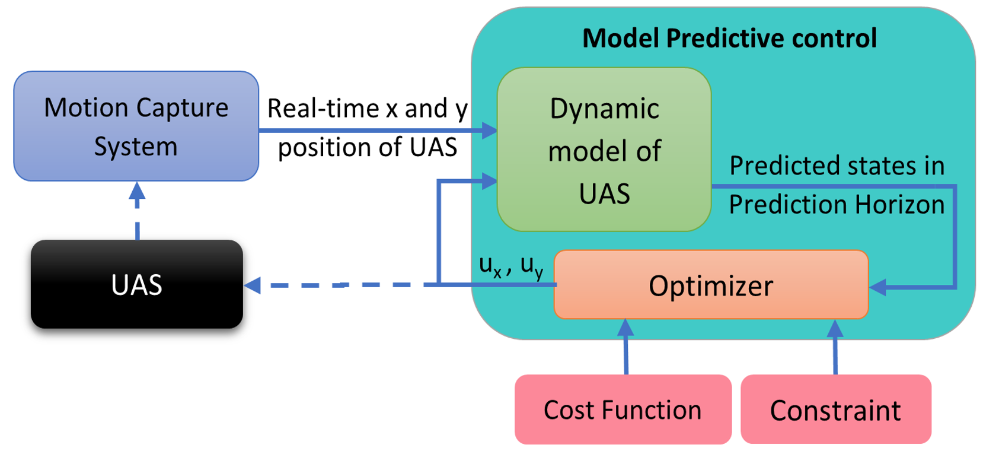

Hengameh Mirhajianmoghadam
Robotics Researcher & Engineer
Control, State Estimation & Perception for Autonomous Systems
I am a robotics researcher and engineer working at the intersection of control, state estimation, and perception for autonomous systems. My expertise spans model predictive control, nonlinear control, system identification, and multi-agent coordination, alongside event-based vision, sensor fusion, and biologically inspired SLAM using event cameras. I connect these areas to develop and evaluate methods for robotic motion, navigation, and coordination.
My doctoral research in Electrical and Computer Engineering at New Mexico State University combines algorithm development with implementation and experimental evaluation on aerial and ground robots. My work includes real-time drone trajectory tracking, predictive control for multi-robot coordination, and biologically inspired event-based localization and mapping. Complementing my academic research, I bring industry experience developing embedded control and motion systems for observatory automation and virtual-reality applications.
Education
M.Sc. in Electrical and Computer Engineering
Research
1) Control & Autonomous Flight
Model Predictive Control for Fast Drone Trajectory Tracking
From flight-data-driven modeling to real-time control: enabling a commercial quadrotor to rapidly follow trajectories, with experimental comparisons against PID.
ICUAS 2024 ↗IEEE IRC 2023 ↗Code ↗
View project & contributions →

Flight demonstration1 / 3
Use the arrows or swipe to explore. Performance results are available on the project page.
2) Predictive Decentralized Control & Multi-Agent Systems
Predictive Flocking Control for Multi-Agent Systems
Sigma-norm decentralized model predictive control for coordinated motion, lattice formation, and obstacle avoidance in multi-agent systems, evaluated through simulations and comparisons with three established flocking methods.
View project & results →Simulation: proposed method, two obstacles1 / 2
Two-obstacle and one-obstacle simulations. Full method comparisons are available on the project page.
3) Event-Based Perception, State Estimation & Mapping
eRatSLAM: Biologically Inspired Event-Based Localization and Mapping
Combining event-based visual odometry, sensor fusion, and place recognition with biologically inspired mapping to estimate motion, recognize revisited places, and build cognitive maps.
AIRC 2025 ↗CCTA 2025 ↗CASE 2025 ↗
Related journal manuscript submitted · Under review
Code will be released following journal approval.
Figure 1. eRatSLAM framework1 / 3
Explore the demonstrations and framework. Open the project for the three related publications.
4) Deep Learning & Visual Perception
EYNet: Airport Detection in Remote-Sensing Images
Extending YOLOv3 with complementary feature-extraction networks, Shearlet-based visual attention, and targeted training strategies to detect airports across varied scales and complex backgrounds.
Pattern Analysis and Applications 2026 ↗Code ↗
View project & results →Figure 1. Airport detection examples1 / 2
Explore airport detections and the network architecture. Click an image to enlarge.
5) Event-Based Lane Detection & Control
Event-Based Lane Detection & Control on QCar2
Connecting event-camera lane perception with vehicle control on a Quanser QCar2, with embedded implementation on NVIDIA Jetson AGX Orin and integration in ROS 2.
Ongoing research · Not yet published
View project & contributions →Event-based lane-detection demonstration1 / 1
6) Nonlinear Predictive Control & System Identification
H²ENN–MPC: Predictive Hierarchical Harmonic Emotional Neuro-Cognitive Control of Nonlinear Systems
Developing differentiable harmonic emotional neural networks for system identification and nonlinear model predictive control, evaluated through a 3-PSP parallel-robot simulation.
Engineering Applications of Artificial Intelligence 2022 ↗
View project & publications →Experience, Teaching & Service
Technical ExpertiseControl, perception, software, and robotic platformsExperienceResearch appointments and industry engineeringTeaching & MentoringCourses, laboratories, and student developmentServiceLeadership, session chairing, and peer reviewHonors & AwardsScholarships, travel awards, and certificatesConferencesPublications, service, and travel supportContactEmail and professional profiles